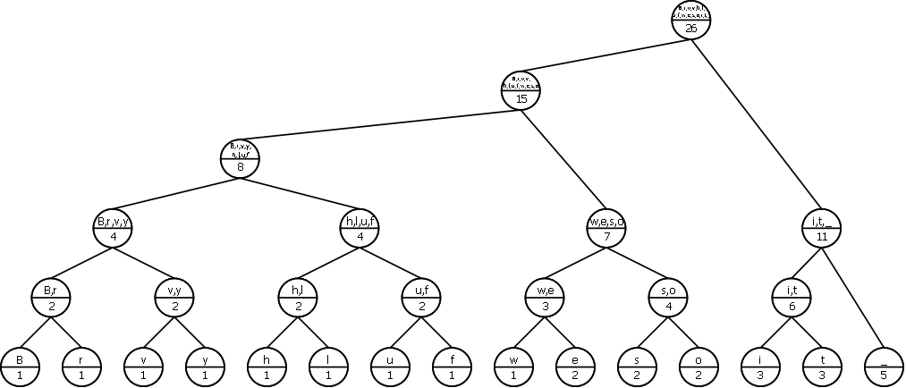
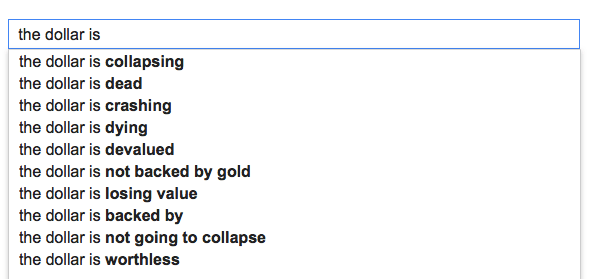
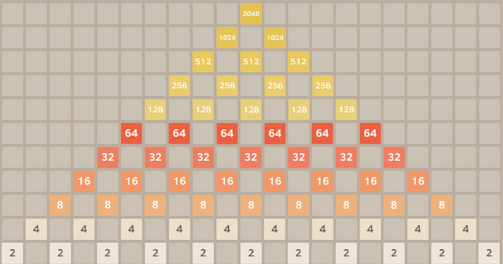
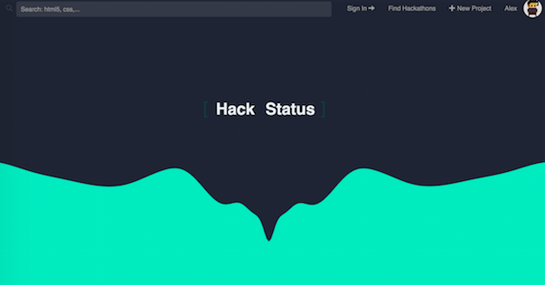

-
Deep Learning
Python
CUDA

-
A deep learning library written in Python and CUDA. Designed and implemented from scratch. Including a fully connected feedforward neural network and a long short-term memory (a special kind of recurrent neural net). Sample applications in handwritten digit recognition and language modeling. Achieved 98.5% test accuracy on MNIST (around state-of-the-art). View SOURCE.
-
Deep Learning Library
-
Huffman Code
C++
 -
An efficiently designed implementation of the optimal Huffman Coding, a well-known lossless data compression algorithm. This implementation takes in any files that can be represented or read as binary files. View SOURCE.
-
Optimal Huffman Coding
-
Algorithm Design
C++
 -
A very efficient algorithm for auto-complete of strings, implemented with a trie and a well-designed heap-based topological sorting algorithm. View SOURCE.
-
Efficient Auto-Complete
-
Parser
Servlet
JDBC
Java

-
An online unit calculator. Built with a parser and an interpreter. Specifically, users can define new units, simplify expressions, and do calculations on numbers with units. Deploied on server with PostgreSQL for user-defined units. Try it HERE. Or view SOURCE.
-
Online Unit Calculator

-
GUI
Java
 -
A special version of the popular game 2048, that the users can specify the size and shape of the board. Armed with a beautiful GUI written in JavaFx. View source code and play it HERE.
-
Board Game 2048+
-
Combinatorial Game Theory
Python

-
A classic combinatorial game. Easy rules and very interesting. You can play it even without a GUI. I implemented the wining strategy algorithm for this game. View my code HERE.
-
Nim Master
-
Numerical Optimization
MATLAB

-
A package for linear and nonlinear optimization, with a tool for solving nonlinear equations. I implemented Simplex Method for linear programming and modified Newton Method for nonlinear problems. Code is HERE and Matlab Compiler Runtime Evironment (MCR) or Octave is needed to run it.
-
Numerical Optimization Tools
-
Recommendation System
 -
A website created together with Han Min Naing, Chenxing Ouyang (Alex), and Kristine Khanh Tran. A social network designed for hackerthon participants so that people can know what other people plan to do in coming up hackathons and make new friends of similar ideas. Planned to integrate a project recommender system based on text mining of the project description. Work in progress.
-
HackStatus.io